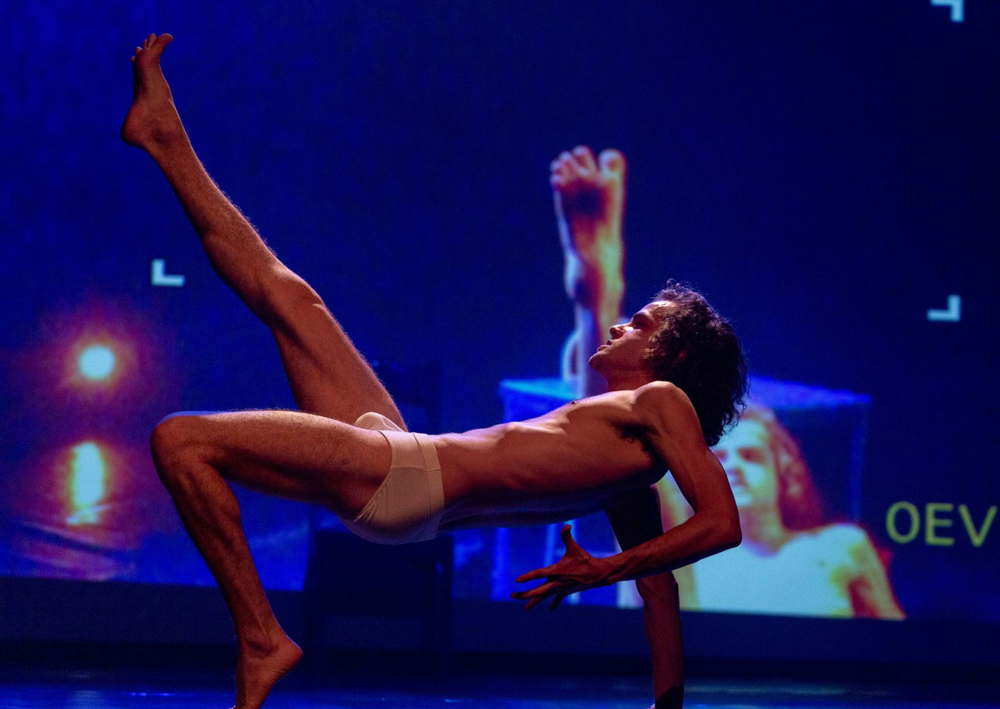

Espetáculo português Sebastian faz curta temporada no Galpão do Folias em São Paulo

Monólogo baseado em caso real de massacre escolar será apresentado nos dias 10, 11 e 12 de abril, com sessão acessível em Libras
A companhia portuguesa Teatro Gíria apresenta pela primeira vez no Brasil o espetáculo Sebastian, monólogo impactante do dramaturgo sueco Lars Norén, que aborda o massacre escolar cometido por Sebastian Bosse, jovem de 18 anos que, em 2006, invadiu sua antiga escola na Alemanha, feriu 27 pessoas e tirou a própria vida.
A peça terá curta temporada em São Paulo, com apenas três apresentações nos dias 10, 11 e 12 de abril de 2025, às 20h, no Galpão do Folias, com sessão do dia 11 com intérprete de Libras.
Um retrato brutal e necessário sobre responsabilidade social
Com direção de Rodrigo Aleixo e atuação de Francisco Monteiro Lopes, o espetáculo mergulha nos últimos momentos do jovem, a partir de seus diários, vídeos e publicações encontrados após o ataque. A dramaturgia propõe uma reflexão profunda sobre violência, abandono, marginalização juvenil e, sobretudo, sobre responsabilidade coletiva.
“Lars Norén coloca como questão principal a responsabilidade: quanta parte cabe à sociedade, ao público? Essa é a pergunta que causa o desconforto necessário”, afirma o ator Francisco Monteiro.
O personagem de Sebastian transita entre reviver, narrar, acusar e buscar respostas, em um estado de limbo emocional. O público, por sua vez, é interpelado diretamente, tornando-se parte ativa da narrativa, como representantes da sociedade que falhou.
Estética minimalista e ressonância simbólica
A cenografia é marcada pelo minimalismo simbólico: uma cama, uma cadeira de escola, uma televisão e um balde transformam-se em espaços plurais como quarto, cela, sala de aula ou reformatório. A proposta enfatiza o isolamento do personagem e amplia o alcance simbólico da encenação.
“Os espectadores não são agentes passivos. São, neste espetáculo, o espelho da sociedade”, reforça o diretor Rodrigo Aleixo.
Reconhecimento internacional e circulação multicultural
Desde sua estreia em fevereiro de 2020, em Cascais (Portugal), o espetáculo já passou por cidades como Lisboa, Caldas da Rainha, Oeiras e Faro, além de ter representado Portugal no Festival Voilá! Europe, em Londres, onde foi indicado ao OffFest Awards como melhor espetáculo.
A montagem, originalmente intitulada A 20 de Novembro, é uma adaptação do texto homônimo de Lars Norén, que também foi encenado em diversos países europeus. A chegada ao Brasil marca mais um passo no projeto de intercâmbio cultural do Teatro Gíria e reforça o compromisso da companhia com temas urgentes, globais e humanitários.
Ações educativas e sociais
Além da temporada no Galpão do Folias, Sebastian contará com apresentações sociais direcionadas a escolas públicas, ONGs, estudantes de teatro e projetos sociais voltados à juventude, fortalecendo o diálogo sobre saúde mental, violência e pertencimento.
Serviço – Sebastian, com Teatro Gíria (Portugal)
Datas: 10, 11 e 12 de abril de 2025 (quarta a sexta-feira)
Horário: 20h
Local: Galpão do Folias – Rua Ana Cintra, 213 – Santa Cecília, São Paulo/SP
Ingressos:
R$ 40 (inteira)
R$ 20 (meia-entrada)
R$ 10 (moradores da região)
Venda online: sympla.com.br/produtor/grupofolias
Classificação indicativa: 14 anos
Duração: 70 minutos
Sessão com Libras: 11 de abril